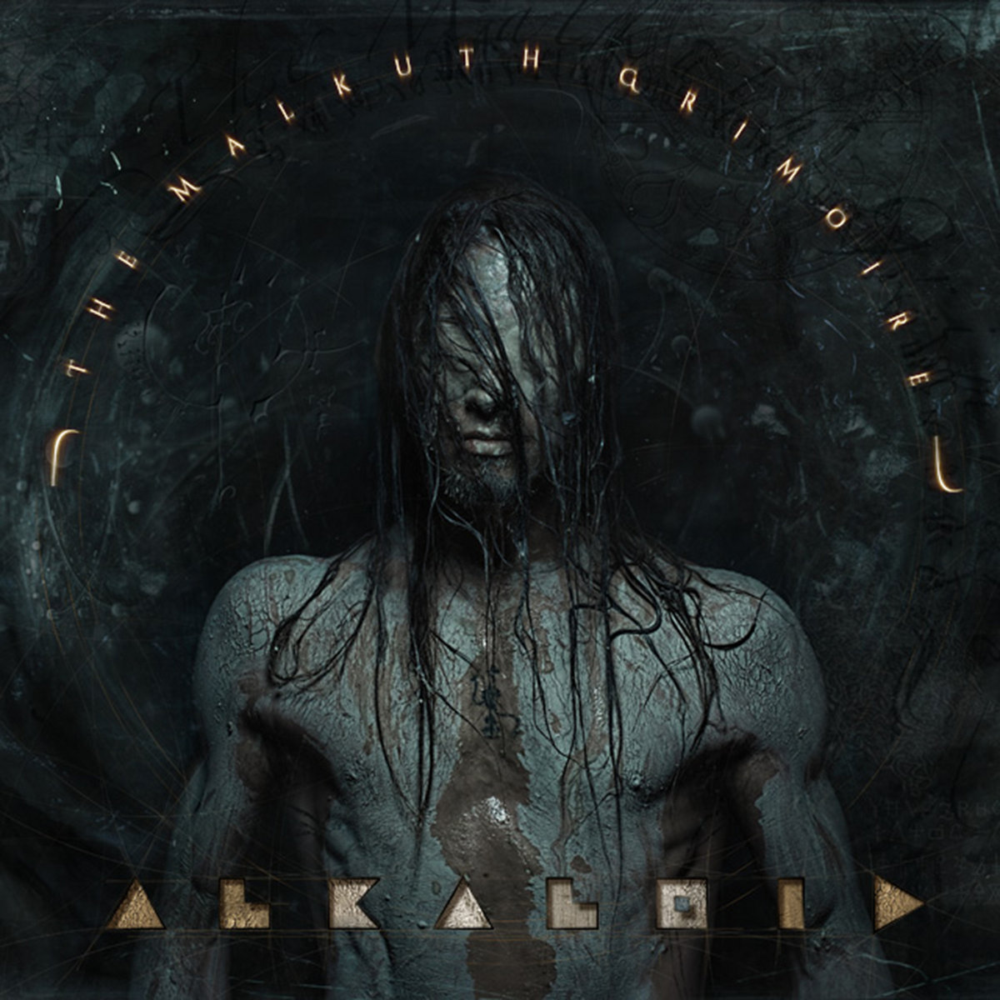
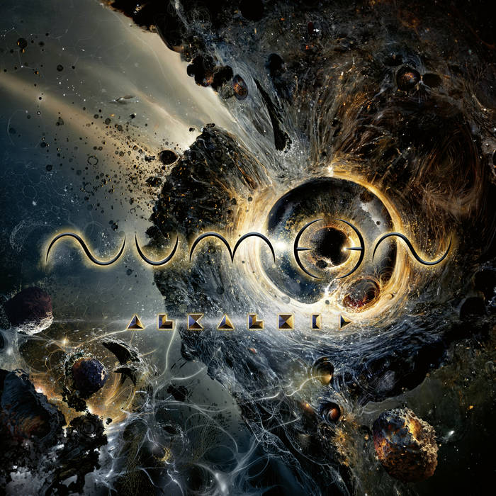

Reviews
Here’s what the critics have been saying about alkaloid and their albums
The Malkuth Grimoire

"The Malkuth Grimoire is a stunning showcase of not only the immense talents of the individual musicians, but the overall experience and band chemistry they share as a unit.” — Angry Metal Guy
"Some of the most dynamically diverse extreme metal you will listen to, period.” — Metal Archives
“Oscillating between 70’s progressive music and modern death metal has never been attempted so dutifully, and it sounds completely devastating.” — Encyclopedia Metallum
Liquid Anatomy
 “The best part about Liquid Anatomy is its tight, spare songwriting. Some supergroups get in each other’s way, despite their best intentions; on this album, both the song styles and interplay between the members' instrumental offerings are smoothly balanced, with everything they've produced on display.” — Metalreviews.com
“The best part about Liquid Anatomy is its tight, spare songwriting. Some supergroups get in each other’s way, despite their best intentions; on this album, both the song styles and interplay between the members' instrumental offerings are smoothly balanced, with everything they've produced on display.” — Metalreviews.com
“It was clear from the outset that this was not going to be a boring listen. Certain expectations go with the epithet Progressive Death Metal … It’s definitely an interesting start … Each track here has bucket loads of personality and identity. ‘Liquid Anatomy’ is entertainingly abnormal, full to bursting with ideas and stellar technical darkness. Brilliant.” — Ave Noctum
Numen
 “Musically Alkaloid is a phenomenal force and despite losing guitarist Danny Tunker, they don’t miss a beat … Christian Münzner and Morean share the load, combining tech death wizardry with chunky riffage and progressive flair, keeping the listener on their toes.” — Angry Metal Guy
“In an endless sea of terrifyingly creative soundscapes, tracks like The Folding still stand out … alternating between severely downtuned guitars … before dropping the listener into pits of silence with natural harmonics like pinpricks of light in the faraway abyss.” — Metal Wani